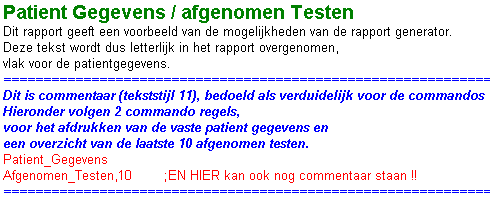

juni 2005
Rapport Generator
Inleiding
Net als de overige modulen in de TestOrganizer, wordt een rapport gedefiniëerd door een protocol.
Het protocol dient hier als template (blauwdruk, knippatroon, sjabloon, opmaakprofiel, opmaakmodel).
Het template bevat de volgende elementen
Onderstaand vindt u de belangrijkste zaken over de editor samengevat. Na het doorlezen van het "voorbeeld" kunt U het beste direct naar de voorbeelden gaan, want dat zal voor de meesten veel duidelijker zijn dan onderstaande gecomprimeerde tekst.
Voor een uitgebreide handleiding van de scripttaal, zie scripttaal.
Voorbeeld
Om het een en ander wat concreter te maken beginnen we met een eenvoudig voorbeeld:

De eerste 4 regels van bovenstaand rapport zijn vaste tekst, welke precies (inclusief font kenmerken) zo wordt opgenomen in het rapport als hier boven is aangegeven.
De blauwe regels (de font kenmerken zijn eenvoudig aan te passen) zijn commentaar, ter verduidelijking van de commando regels (rood in bovenstaand voorbeeld).
De rode regels in bovenstaand voorbeeld, zijn commando's, welke door de rapport generator zullen worden geïnterpreteerd en waarop de rapport generator de gevraagde testresultaten zal opnemen in het rapport.
De eerste commando regel vertelt de rapport-generator om de patiënt-gegevens (zoals naam, patnr, geboorte datum, etc) op te nemen in het rapport. Het invoegen van deze gegevens gebeurt op de plaats waar het commando staat.
De tweede rode regel vertelt de rapport-generator om een overzicht te geven van de 10 laatst afgenomen testen bij deze patient.
Hoe de rapport-generator onderscheid maakt tussen vaste tekst en commando's komt in de volgende paragraaf aan de orde.
Rapport-generator Editor
Voorlopig is geen editor in de TestOrganizer geïntegreerd, maar dient gebruik gemaakt te worden van het programma PuntHoofd. (PuntHoofd is een freeware programma, gemaakt door een van onze medewerkers, die ook de bronbestanden beschikbaar heeft gesteld).
Het gebruik van PuntHoofd (als editor) is vergelijkbaar met het programma WordPad. Zie voor uitgebreide informatie de handleiding van PuntHoofd.
Er is één wezenlijk verschil met andere tekstverwerkers (zoals WordPad). Kan in WordPad een onbeperkt aantal tekst- en paragraaf-stijlen worden gebruikt. In PuntHoofd is het aantal tekststijlen beperkt en bovendien worden de stijlen op een andere manier gebruikt en opgeslagen.
Tekst en paragraaf stijlen
Voor degene, die bekend zijn met het maken van webpagina's, valt het principe in enkele woorden samen te vatten "HTML met external CSS".
Hierbij bevat een document (dus ook een rapport of een rapport-template) naast de inhoud, alleen verwijzingen naar stijlen. De stijlen zelf worden gedefiniëerd in een apart document (RVF.CSS). Het belangrijke voordeel hiervan is dat alle documenten dezelfde stijl en dus dezelfde uitstraling hebben. Verandert men één van de stijlen, dan zullen alle documenten, waarin een verwijzing naar deze stijl voorkomt, van uiterlijk veranderen, zodra de documenten opnieuw worden bekeken of geprint.
Hoewel het bovenstaande misschien wat ingewikkeld klinkt, zal blijken dat de praktijk veel gemakkelijker is (dan b.v WordPad).
Net zoals je in WordPad kiest om een aantal letters VET weer te geven, kies je in PuntHoofd een complete tekst-stijl voor een aantal letters, woorden of wat dan ook.
Relevante Bijzonderheden
PuntHoofd is een WYSIWYG editor met volledige drag en drop faciliteiten.
Verder zijn er voorzieningen aanwezig om schermafdrukken op te nemen, pijlen en teksten aan plaatjes toe te voegen en zelfs freehand tekenen is mogelijk.
Links naar zowel bestanden als websites kunnen worden ingevoegd. (In edit mode kunnen deze woden geactiveerd door de CTRL-toets in te drukken terwijl men op de link klikt).
Met rechtsklikken op een item, kan de meta-data (eigenschappen) van een item worden ingesteld.
Eigenaardigheden
Helaas heeft de editor ook enkele eigenaardigheden, waarop men bedacht moet zijn.